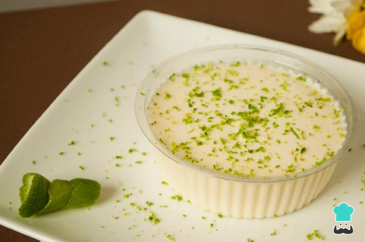

Mousse de Limão

Description
Delicioso mousse de limão
Ingredients
- 1 lata de leite condensado
- 1 lata de creme de leite
- 1/2 xícara de suco de limão (esse suco é puro mesmo, sem água, é só espremer o limão)
Steps
- Coloque no liquidificador o creme de leite (com soro mesmo) e o leite condensado.
- Bata um pouco e depois vá acrescentando o suco do limão, aos poucos.
- Ele vai ficar bem consistente, leve à geladeira.